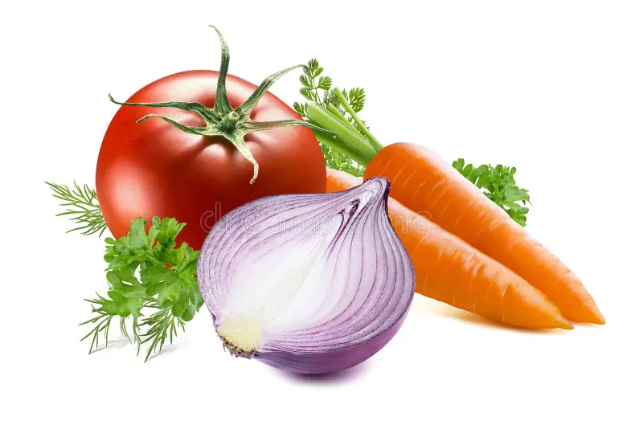

Comienza por lavar bien los tomates y pelar la cebolla, zanahoria. Corta los tomates en cuartos, pica la cebolla y corta la zanahoria en rodajas.

Añade los tomates cortados en trozos y el caldo a la cazuela. Cocina durante 20 minutos a fuego medio.